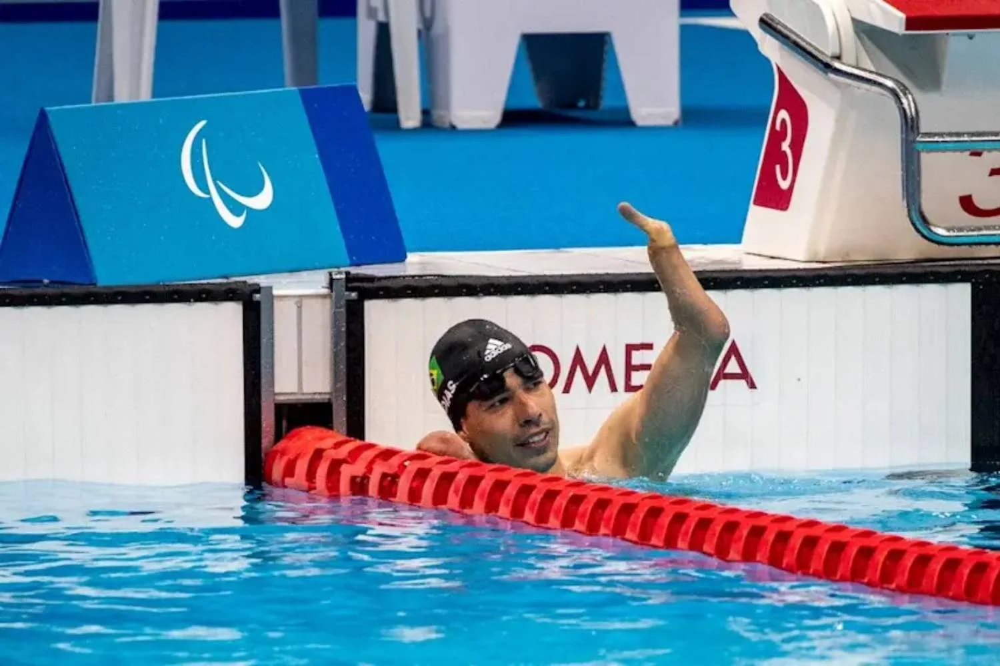
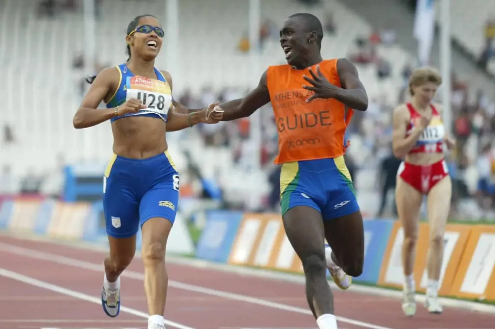
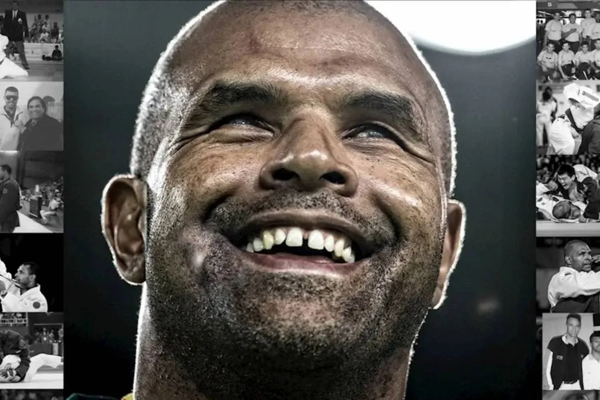
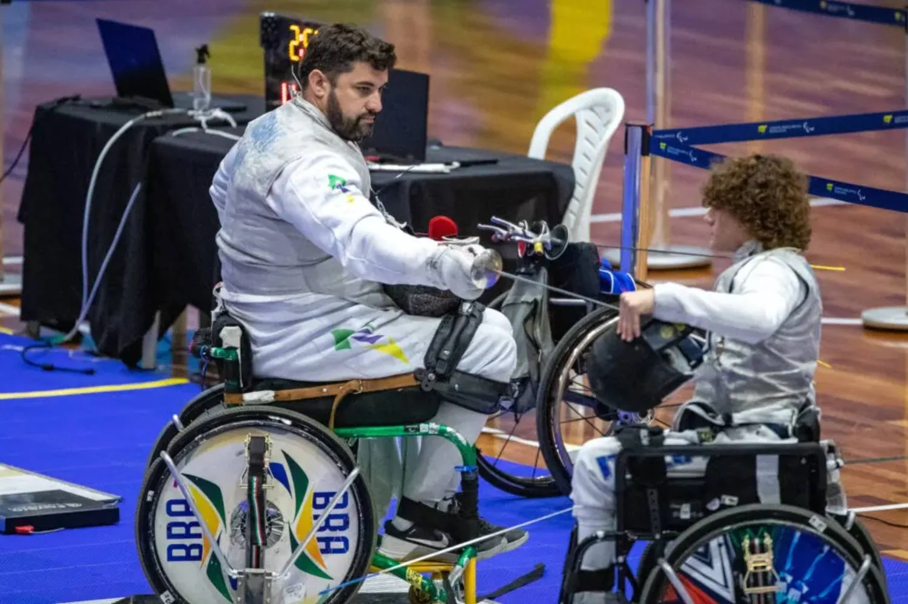
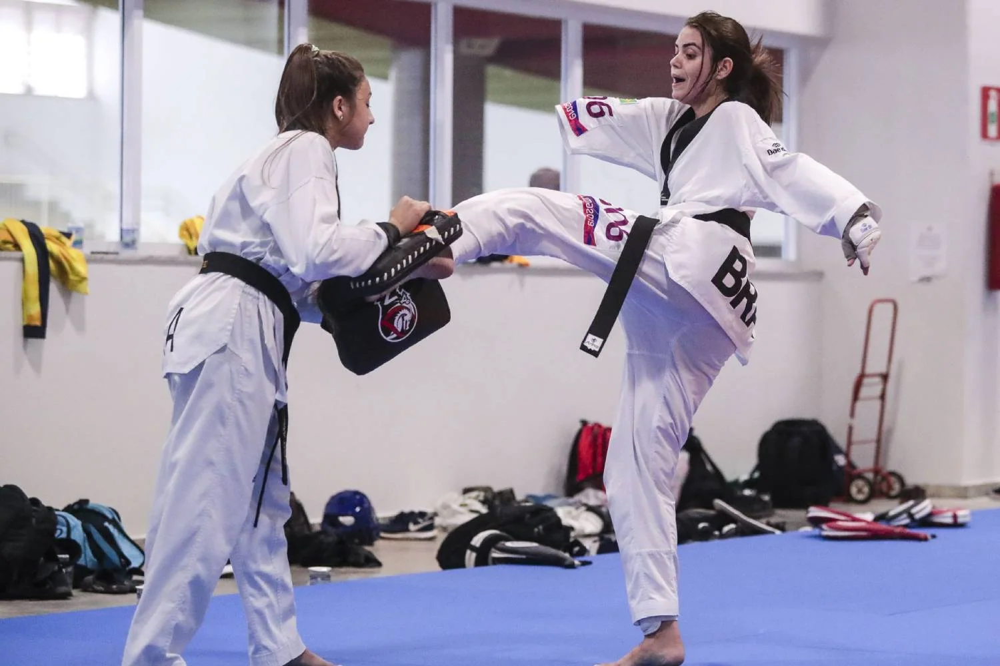
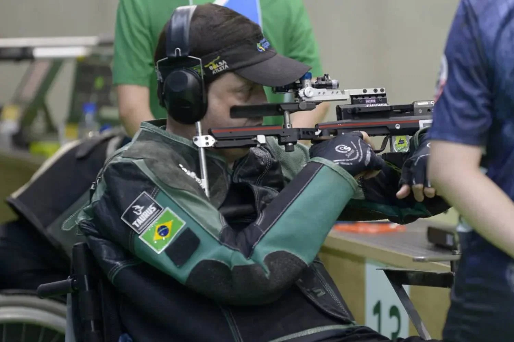

Atletas que Inspiram
Conheça atletas brasileiros que fizeram história no esporte paralímpico e contribuíram para a inclusão de pessoas com deficiência.

Daniel Dias - Natação
27 medalhas paralímpicas
Daniel Dias é um dos maiores nomes da natação paralímpica brasileira. Participou de quatro edições dos Jogos Paralímpicos e conquistou diversas medalhas e recordes.
Sua trajetória inspira novos atletas e contribuiu para o reconhecimento da natação paralímpica no Brasil.

Ádria Santos - Atletismo
13 medalhas paralímpicas
Ádria Santos é uma das grandes atletas paralímpicas brasileiras. Participou de seis edições dos Jogos Paralímpicos, competindo nas provas de velocidade.
Conhecida como Filha do Vento, tornou-se uma referência no atletismo e na inclusão de pessoas com deficiência visual.

Antônio Tenório - Judô
11 medalhas paralímpicas
Antônio Tenório é um judoca brasileiro reconhecido por sua trajetória no esporte paralímpico.
Começou a praticar judô ainda criança e se tornou um exemplo de dedicação, persistência e conquistas esportivas.

Jovane Silva Guissone - Esgrima
4 medalhas paralímpicas
Jovane Silva Guissone começou a praticar esgrima em cadeira de rodas aos 25 anos.
Em Londres 2012, conquistou uma medalha de ouro e se tornou o primeiro brasileiro campeão paralímpico nessa modalidade.

Silvana Fernandes - Taekwondo
2 medalhas paralímpicas
Silvana Fernandes foi a primeira mulher brasileira a conquistar uma medalha paralímpica no taekwondo.
Conquistou bronze em Tóquio 2020 e Paris 2024. Sua história mostra a importância da dedicação e das oportunidades no esporte.

Alexandre Galgani - Tiro Esportivo
2 medalhas paralímpicas
Alexandre Galgani representa o Brasil no tiro esportivo paralímpico, competindo em provas de carabina de ar.
Participou dos Jogos Paralímpicos do Rio 2016 e de Tóquio 2020, além de conquistar resultados importantes em competições internacionais.